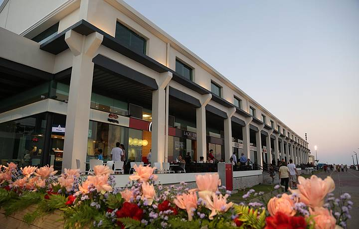
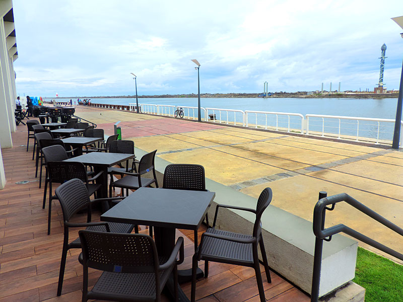

Armazéns do Porto
De principal canal de fluxo de materiais para o Atlântico a ponto de referência gastronômica, o porto de Recife teve destaque em diferentes setores econômicos da região com o passar do tempo. Procura um bom passeio em família e conhecer mais sobre a culinária local? Conheça mais sobre os Armazéns dos portos.
História:
Muito antes do potencial turístico, desde séculos anteriores à fundação oficial, em 1918, até os dias atuais, o porto de Recife foi essencial para a estruturação da cidade. Quando os colonizadores portugueses ainda descobriam o Brasil, o navegador Pero Lopes de Souza já registrava em seu Diário de Viagem, um ancoradouro denominado de ‘Arrecife dos Navios’. O lugar se desenvolveu e tornou-se ponto principal de importação, produção e exportação de açúcar, como também de abastecimento das principais mercadorias, proporcionando a implementação na vizinhança dos primeiros engenhos de açúcar, povoados de imigrantes europeus e as primeiras vilas dando origem ao Bairro do Recife.
Com o intenso fluxo de marinheiros, por séculos, seus arredores eram redutos do chamado “baixo meretrício”. Além disso, foi também gerador da urbanização da capital, provocando necessidades como a pavimentação de ruas, construção de estradas de ferro, prédios e armazéns, que foram se revitalizando e atualmente contam com uma estrutura voltada para atender as demandas turísticas.
Passeio:
Os Armazéns do Porto é o lugar ideal para aquela pausa para o almoço ou apenas para tomar um cafezinho ou uma cerveja para espantar o calor. O espaço fica bem ao lado do letreiro de Recife, na Praça do Marco Zero, e oferece uma variedade de bares, restaurantes, cafés e sorveterias. O mais legal de tudo é a vista privilegiada que se tem para o porto e para as esculturas de Brennand.
São diversos bares, sorveterias e restaurantes, além de um centro de artesanato, às margens do encontro do Rio Capibaribe com o mar, além de uma intensa programação cultural.
Acesso:
Endereço: Av. Alfredo Lisboa.
Horário de funcionamento: de segunda a quarta, das 10h às 22h; quinta, das 10h à 0h; sexta e sábado, das 10h às 3h; domingo, das 10h às 22h.
Referências: